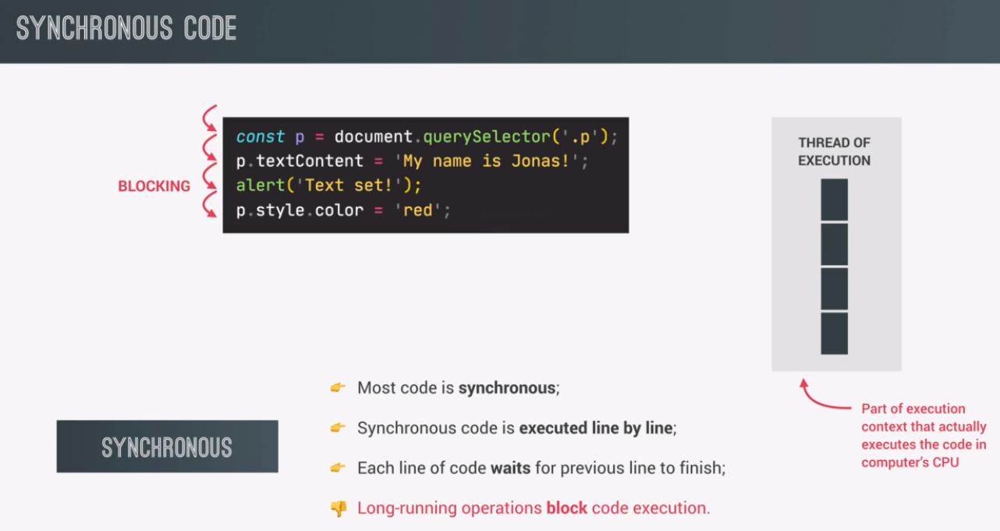
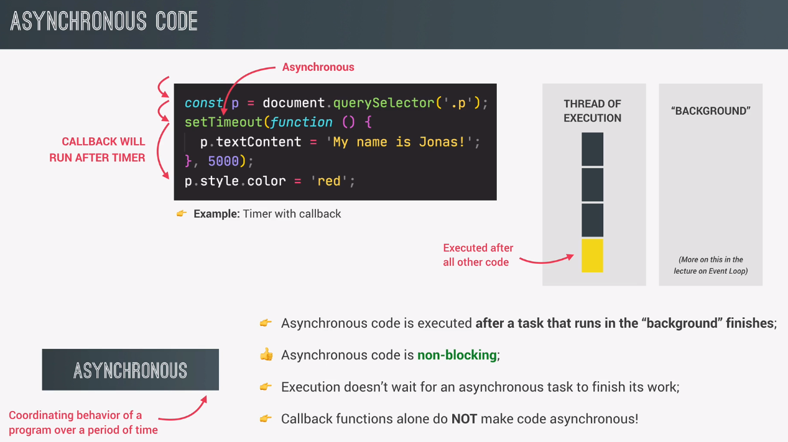
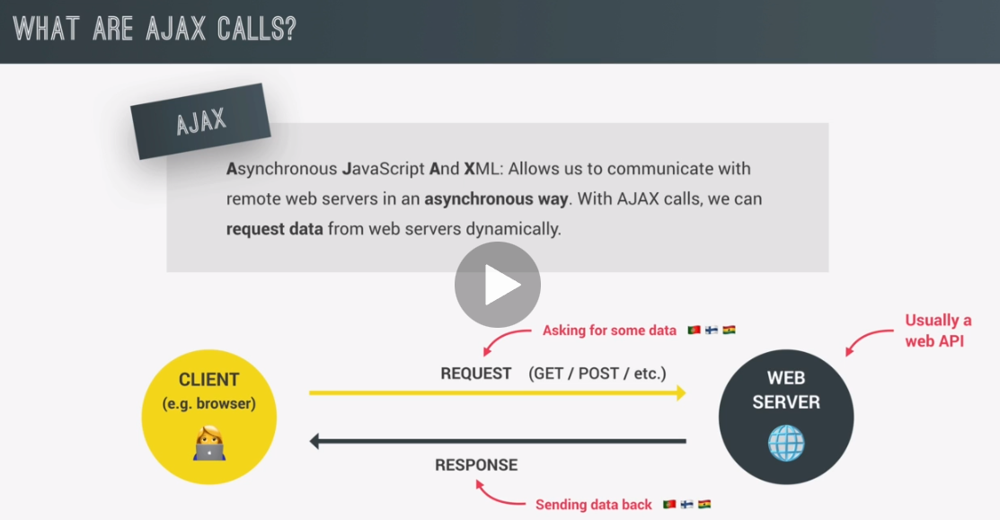
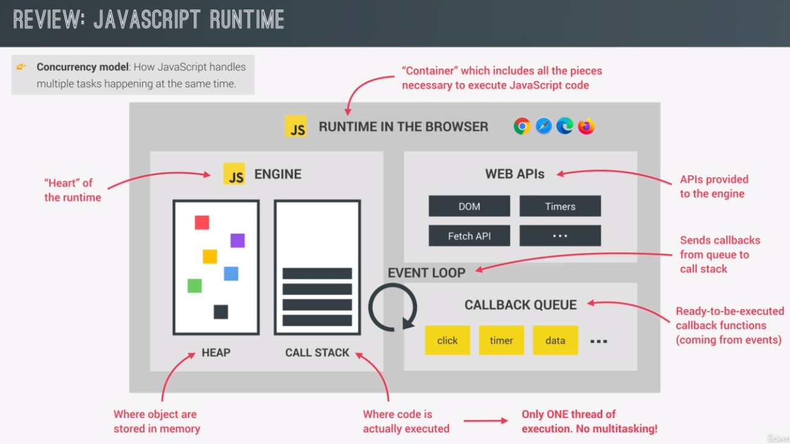

..........
synchronous simply means that the code is executed line by line, in the exact order of execution that we defined in our code,
as the first line of code is reached in the execution, it is simply executed in the execution of thread.
then the next line of code is executed and then the next one, all in sequence. So each line of code always waits for the previous line to finish execution.
this can create problems when one line of code takes a long time to run.
the first line of code is still synchronous here, and we also move to the second line in a synchronous way.
But here we encountered the set timeout function, which will basically start a timer in an asynchronous way.
So this means that the timer will essentially run in the background without preventing the main code from executing.
We also register a callback function, which will not be executed now, but only after the timer has finished running.
Asynchronous code is executed after a task that is running in the background finishes execution.
in this case, that is the timer.
This callback that we just talked about is registered, and then we immediately move on to the next line. So the main code is not being blocked and execution does not wait for the asynchronous timer to finish its work.
when the timer finally finishes after five seconds, the callback function will finally be executed as well. So you'll see that this callback runs after all the other code, even though in the code, it doesn't appear at the end. And so basically an action was deferred into the future here in order to make the code non-blocking.
Only certain functions such as set timeout work in an asynchronous way. We just have to know which ones do and which ones don't, okay?
Ajax stands for asynchronous JavaScript and XML, and basically it allows us to communicate with remote web servers in an asynchronous way.
when we're asking a server to send us some data, this server usually contains a web API. And this API is the one that has the data that we're asking for.
when building applications in practice, we simply call these online APIs, API, and many people will also call these APIs, Web APIs, or again, just simply API. So the term Online API is actually a term that I came up with myself because the term Web API is actually also used for other things.
GitHub.com list of APIs.
the heart of every JavaScript runtime is the engine. So, this is where code is actually executed and where objects are stored in memory. So, these two things happen in the call stack and in the heap.
what's important to note here is that JavaScript has only one threat of execution. And so it can only do one thing at a time. There is absolutely no multitasking happening in JavaScript itself.
Finally, whenever the call stack is empty the event loop takes callbacks from the callback queue and puts them into call stack so that they can be executed. So the event loop is the essential piece that makes asynchronous behavior possible in JavaScript.
But if there is only one thread of execution in the engine then how can asynchronous code be executed in a non blocking way?
here is what the event loop does. It looks into the call stack and determines whether it's empty or not.Except of course for the global context, then if the stack is indeed empty which means that there's currently no code being executed then it will take the first callback from the callback queue and put it on the call stack two will be executed.
this is called an event loop tick. So each time the event loop takes a callback from the callback queue. We say that there was an event loop tick.
the event loop has the extremely important task of doing coordination between the call stack and to callbacks in the callback queue. So, the event loop is basically who decides exactly when each callback is executed.
Another thing that becomes clear from this whole explanation is that the JavaScript language itself has actually no sense of time. That's because everything that is asynchronous does not happen in the engine. It's the runtime who manages all the asynchronous behavior. And it's the event loop who decides which code will be executed next.
But the engine itself simply executes whatever code it has given.
callbacks related to promises like this one that we registered with the promises then method. Do actually not go into the callback queue.
callbacks of promises have a special queue for themselves, which is the so called microtasks queue.
what is special about the microtasks queue is that it basically has priority over the callback queue.
So, at the end of an event loop tick, so after a callback has been taken from the callback queue, the event loop will check if there are any callbacks in the microtasks queue.
if there are, it will run all of them before it will run any more callbacks from the regular callback queue. And, by the way, we call these callbacks from promises microtasks.
In practice, this means that microtasks can basically cut in line before all other regular callbacks. Now, if one microtask adds a new microtask then that new microtask is also executed before any callbacks from the callback queue. And this means that the microtasks queue can essentially starve the callback queue. But, this is usually never a problem.
lkjlkjlkj
jlkjlkjlk